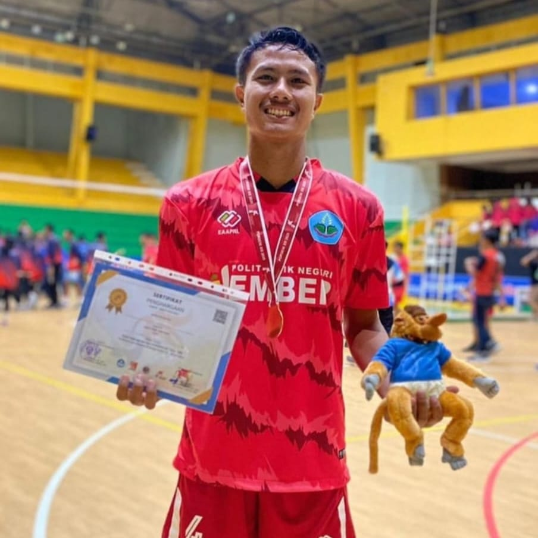
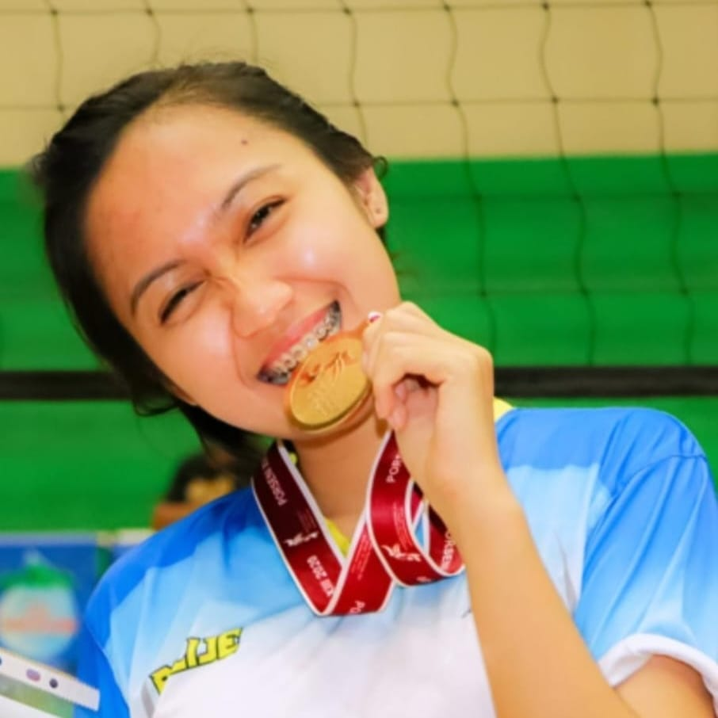
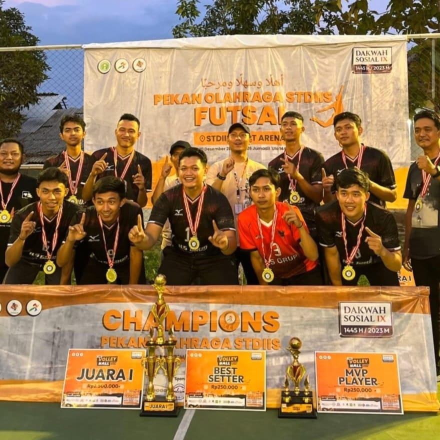
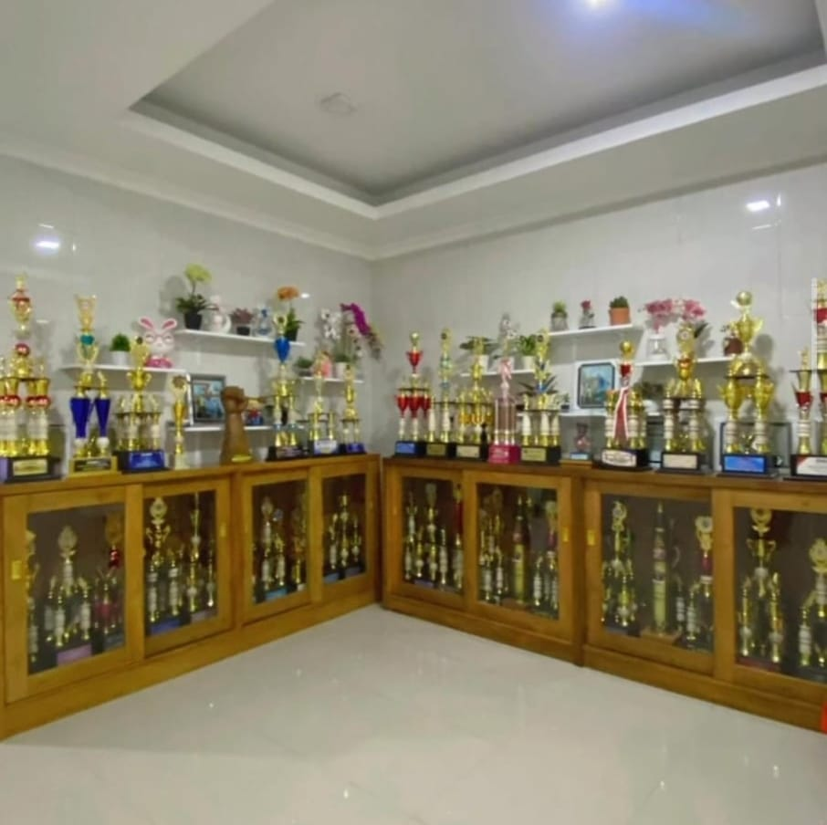

Profil UKM-O Volije
UKM Voli Politeknik Negeri Jember merupakan wadah bagi mahasiswa yang memiliki minat dan bakat dalam olahraga bola voli. UKM ini bertujuan untuk mengembangkan keterampilan bermain voli, meningkatkan kebugaran jasmani, serta melatih kerja sama tim, kedisiplinan, dan sportivitas melalui kegiatan latihan dan kompetisi.
Kegiatan Utama UKM Voli Politeknik Negeri Jember
- Latihan rutin untuk meningkatkan kemampuan bermain voli.
- Latihan teknik dasar seperti servis, passing, smash, dan blocking.
- Latihan fisik untuk meningkatkan stamina dan kelincahan.
- Mengikuti turnamen atau pertandingan bola voli.
- Evaluasi latihan untuk memperbaiki kemampuan bermain.
- Mempererat kebersamaan dan kerja sama antaranggota.



